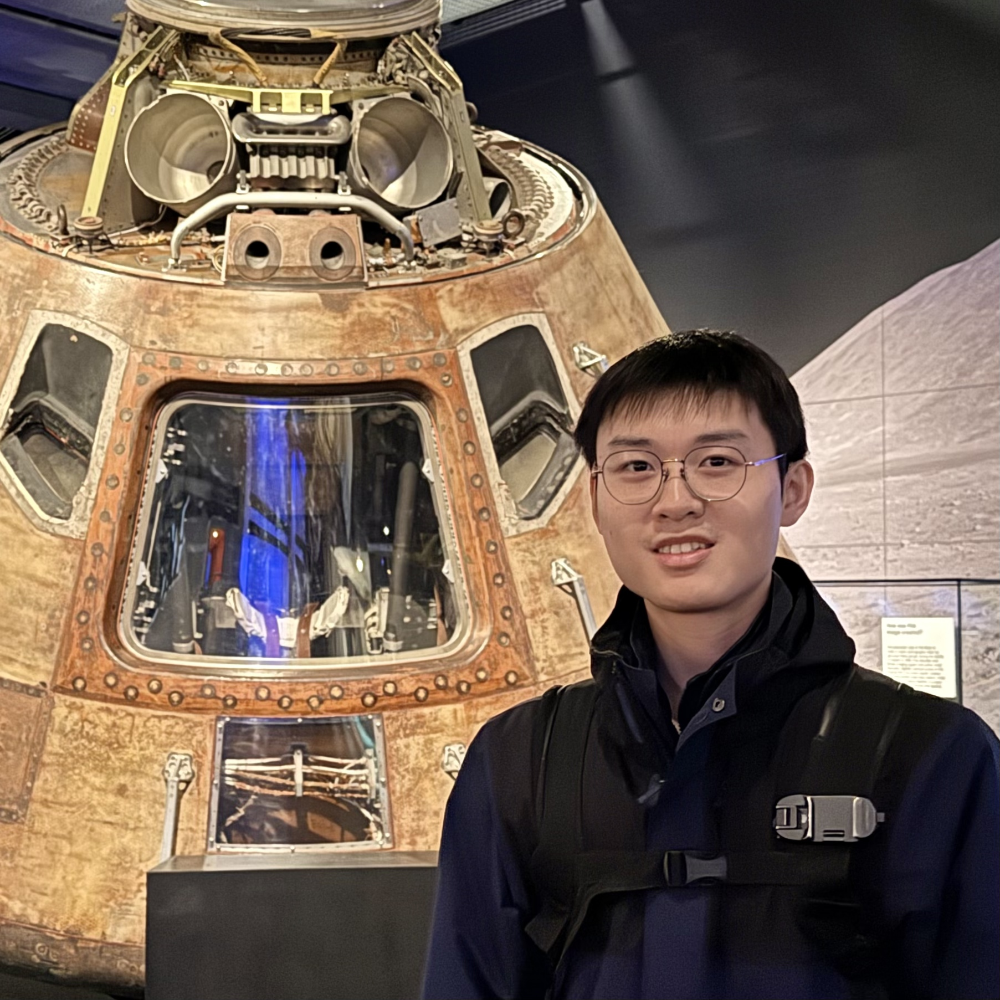

I am an astronomy researcher interested in Asteroids, Comets, and Meteors. Beyond astronomy, I am a genetic genealogy enthusiast (Haplogroups: Y: O1b1a1b-MF188438, mt: B4b1a2) and an amateur radio operator (Call sign: BA7MJD).